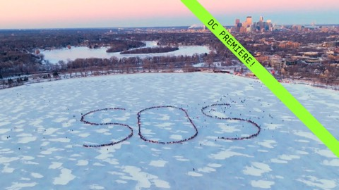
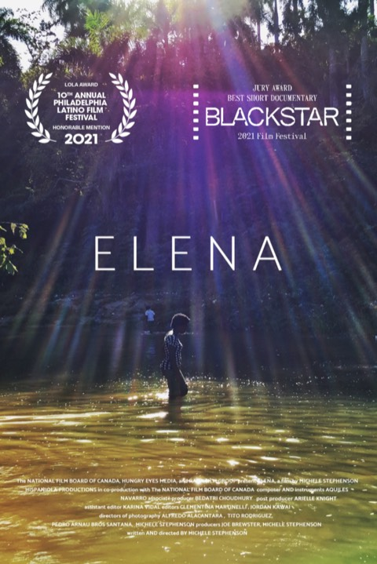

Race & civil rights
Racism, civil rights, reparations and Black history.
30 films · 15 sessions · 106 people
Often together with: War, conflict & the militaryMigration & bordersAfricaWomen, gender & sexualityCriminal justice & prisonsLegal & safety for reporters
Films

A Month in MinnesotaAnnie Sundberg2026 · 40 min- An Unknown SubstanceSteven Leckart · Maia Wikler2026 · 39 min
 Free Joan LittleYoruba Richen2026 · 36 min
Free Joan LittleYoruba Richen2026 · 36 min My NDAJuliane Dressner, Miriam Shor2026 · 101 min
My NDAJuliane Dressner, Miriam Shor2026 · 101 min- Short Strand: Against the GrainSteven Leckart · Maia Wikler2026
- Short Strand: Minneapolis: On the Record + A Special ScreeningLaura Poitras, Rachel Lauren Mueller · Anne Sundberg · Yoruba Richen, Christalyn Hampton2026
- They're HereThey’re Here2026 · 25 min
 Wild EastMaia Wikler2026 · 39 min
Wild EastMaia Wikler2026 · 39 min Canceled: The Paula Deen StoryBilly Corben2025 · 103 min
Canceled: The Paula Deen StoryBilly Corben2025 · 103 min KhartoumIbrahim Snoopy Ahmad, Timeea Mohamed Ahmed, Rawia Alhag2025 · 82 min
KhartoumIbrahim Snoopy Ahmad, Timeea Mohamed Ahmed, Rawia Alhag2025 · 82 min Listen to MeStephanie Etienne, Kanika Harris2025 · 77 min
Listen to MeStephanie Etienne, Kanika Harris2025 · 77 min- Acts of ReparationSelina Lewis Davidson, Macky Alston2024 · 113 min
 American Coup: Wilmington 1898Brad Lichtenstein, Yoruba Richen2024 · 111 min
American Coup: Wilmington 1898Brad Lichtenstein, Yoruba Richen2024 · 111 min Ernest Cole: Lost and FoundRaoul Peck2024 · 105 min
Ernest Cole: Lost and FoundRaoul Peck2024 · 105 min- Everything Is FineVanessa Kjeldsen2024 · 28 min
- How to Sue the KlanJohn Beder2024 · 35 min
 Men of WarJen Gatien, Billy Corben2024 · 98 min
Men of WarJen Gatien, Billy Corben2024 · 98 min Locked OutKate Davis, Luchina Fisher2023 · 78 min
Locked OutKate Davis, Luchina Fisher2023 · 78 min- Phantom ParrotKate Stonehill2023 · 82 min
- Myanmar DiariesThe Myanmar Film Collective2022 · 70 min

ElenaMichèle Stephenson2021 · 30 min NonstopZac Manuel, Marta Rodriguez Maleck2021 · 12 min
NonstopZac Manuel, Marta Rodriguez Maleck2021 · 12 min They Won't Call It MurderThey Won’t Call It Murder2021 · 21 min
They Won't Call It MurderThey Won’t Call It Murder2021 · 21 min- InfluenceRichard Poplak, Diana Neille2020 · 91 min
 MLK/FBISam Pollard2020 · 104 min
MLK/FBISam Pollard2020 · 104 min- The New Corporation: The Unfortunately Necessary SequelThe New Corporation2020 · 106 min
 A Woman CapturedBernadett Tuza-Ritter2018 · 89 min
A Woman CapturedBernadett Tuza-Ritter2018 · 89 min Did You Wonder Who Fired the Gun?Travis Wilkerson2017 · 70 min
Did You Wonder Who Fired the Gun?Travis Wilkerson2017 · 70 min The Rape of Recy TaylorNancy Buirski2017 · 91 min
The Rape of Recy TaylorNancy Buirski2017 · 91 min- The Storm MakersGuillaume Suon2015 · 66 min
Sessions
- 2025 · Thu Oct 30 · 2:15 PMPanel · DX²Race in Real TimeAnurima Bhargava, Byron Hurt, Laura Dyan Kezman, William Howell, Natalie Bullock Brown
- 2024 · Fri Nov 8 · 1:00 PMPanel · DX²Mining and Contributing to Archives: Crafting the Future of Documentary StorytellingMacky Alston, Selina Lewis Davidson, Gaia de Simoni, Ben Loeterman, Teresa Murphy, Rachel Antell
- 2023 · Sat Nov 4 · 11:00 AMWorkshopDecoding Police Recordstrina reynolds-tyler, cai thomas
- 2021 · Fri Oct 15 · 3:00pmPanel · DX²Beyond Inclusion: Challenging Entrenched InstitutionsJennifer 8. Lee, Richard Jean So, Sabrina Schmidt Gordon
- 2021 · Fri Oct 15 · 9:30amPanel · DX²Constructing the New/s: Year OneJessica Clark, Farai Chideya
- 2019 · Thu Oct 10 · 9:30 AMConversationOpening Conversation: Race in FocusWesley Lowery, Michèle Stephenson, Marco Williams
- 2019 · Thu Oct 10 · 9:30amPanel · DX²Race In FocusMichèle Stephenson, Marco Williams, Wesley Lowery
- 2018 · Fri Oct 12 · 4:15 PMConversationClosing Conversation: Journeys Across the Abyss in Print and ScreenJames Longley, Shannon Service, Janet Reitman
- 2018 · Thu Oct 11 · 4:15pmPanel · DX²Elegy & EvidenceStephen Maing, Yance Ford, Topher Sanders
- 2018 · Thu Oct 11 · 4:15 PMConversationElegy and Evidence: A Conversation with Yance Ford (Strong Island) and Stephen Maing (Crime + Punishment)Yance Ford, Stephen Maing, Topher Sanders
- 2018 · Fri Oct 12 · 4:15pmPanel · DX²Journeys Across the AbyssShannon Service, Janet Reitman, James Longley
- 2018 · Sat Oct 13 · 11:45 AMWorkshopWorkshop: Research DeskJohanna Hamilton, Shola Lynch, Margot Williams
- 2017 · Sat Oct 21 · 9:30 AMWorkshopSafe+Secure Filmmaker Workshop, in Association with Doc SocietyJudith Matloff, Jess Search
- 2016 · Fri Oct 7 · 9:30 AMPanel · DX²Color Bars: Race, Police Conduct and the Camera’s EyeCheryl W. Thompson, Craig Atkinson, Lyric Cabral, Gan Golan, Jamie Kalven, Kevin Christopher Seltzer, Julien A. Terrell, Chris Seltzer
- 2015 · Thu Oct 1 · 2:30 PMPanelSafety on the FrontlinesRicardo Sandoval-Palos, Christina Coleman, Matthew Heineman, Kirsten Johnson, Ross Kauffman
People most involved

 Macky AlstonFilmmaker, panelist · 2024
Macky AlstonFilmmaker, panelist · 2024 Billy CorbenFilmmaker, panelist · 2 editions, 2024–2025
Billy CorbenFilmmaker, panelist · 2 editions, 2024–2025 Yoruba RichenFilmmaker, panelist · 3 editions, 2023–2026Newmark Graduate School of Journalism at CUNY
Yoruba RichenFilmmaker, panelist · 3 editions, 2023–2026Newmark Graduate School of Journalism at CUNY
- Bernadett Tuza-RitterFilmmaker, panelist · 2018
 Jen GatienFilmmaker, panelist · 2024
Jen GatienFilmmaker, panelist · 2024 Raoul PeckPanelist, filmmaker · 2024
Raoul PeckPanelist, filmmaker · 2024
 Rachel RaneyFilmmaker, panelist · 2024
Rachel RaneyFilmmaker, panelist · 2024- Stephanie EtiennePanelist, filmmaker · 2025
 Kanika HarrisFilmmaker, panelist · 2025
Kanika HarrisFilmmaker, panelist · 2025 Steven Leckart · Maia WiklerFilmmaker · 2026
Steven Leckart · Maia WiklerFilmmaker · 2026- Yance FordPanelist · 2018
- Stephen MaingPanelist · 2018
- James LongleyPanelist, filmmaker · 2018
- Shannon ServicePanelist, filmmaker · 2018
- Guillaume SuonFilmmaker · 2015
 Sara ColmPanelist · 2015
Sara ColmPanelist · 2015- Terry FitzpatrickPanelist · 2015
- Douglas GillisonPanelist · 2015
- Nancy BuirskiFilmmaker · 2017
- Recy TaylorFilm subject · 2017
- Travis WilkersonFilmmaker · 2017
- The Myanmar Film CollectiveFilmmaker · 2022


 Kate DavisFilmmaker · 2023
Kate DavisFilmmaker · 2023 Luchina FisherFilmmaker · 2023
Luchina FisherFilmmaker · 2023 Tracy JanModerator · 2023
Tracy JanModerator · 2023- Kate StonehillPanelist, filmmaker · 3 editions, 2022–2025